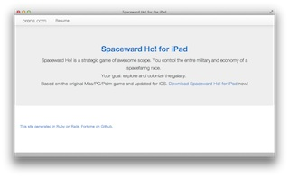

Spaceward Ho! for iPad
Play the classic Spaceward Ho! game, now available for your iPad.

View on Github
ratings exporter for Netflix
Export your seen and some of your rated movie info from your Netflix account. Due to Netflix API changes, this service is no longer available.

View on Github
Naval Game To Be Named Later
I am writing a (modern) port of the classic game North Atlantic '86. I'm stuck on Combat at the moment.

View on Github
orens.com
I wrote a Rails application to host my website (really, some recipes and resumes)
View on Github
Kid Game To Be Named Later
I am writing a game to help kids learn about money...Prototype is in Rails. The final version might be in Rails too, or maybe iPad/iPhone? We'll see. Trying to make paying bills fun as well as educational.
View on Github